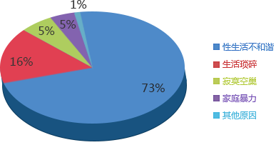

性障危害
73%的女性从未高潮，男性罪责难逃

2011-2017离婚原因调查
（本数据来源于中华医学会官方网站）
-
王女士 教师 28岁
观点：会早点分手，这方面比较会介意，祝他找到不介意的女生……
-
张女士 空姐 25岁
观点：不能原谅，考虑家庭不会跟他离婚，但是会介意这个事情……
-

刘女士 文员 26岁
观点：会原谅，为了家也不忍心因为这个离开他，但会想办法治……
-
吴女士 医生 29岁
观点：一日夫妻百日恩，还是会原谅啦，希望他能积极去医院治疗……
-
秦女士 秘书 23岁
观点：如果身体没任何疾病会跟他好，如果有疾病而且这方面……
-

李女士 高管 30岁
观点：不能原谅，如果没有性的婚姻，我会很崩溃的……
-
针对性功能障碍复杂的病因和患者的个体差异，辨证施治，帮助患者解除心理、生理上的痛苦，对于性功能障碍疾病应实行分型对症治疗方法。